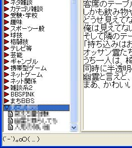

えまのんでの設定方法 えまのんを一度起動して終了すると、インストールされているフォルダに「log」フォルダができます。そのフォルダに「掲示板設定ファイル」Comp2ch.2CAをリンクを右クリックし「対象をファイルに保存」メニューを選んでダウンロードします。既に他の掲示板を登録している方は、別の場所にダウンロードし内容をコピーペーストして追加します。「掲示板設定ファイル」の設定ができましたら「掲示板一覧ファイル」BBS_KEY.2CMを同様に「log」フォルダにダウンロードします。別の場所にダウンロードしてから、コピーまたは移動しても良いです。 作業が完了したらえまのんを起動します。  カテゴリの一番下に先程設定した内容が追加されます。板の追加や変更をした場合はBBS_KEY.2CMを変更しますので、再度ダウンロードして下さい。 レスの書き込みは少し遅いですが普通にできます。スレ立ての方法やスレッドのURL表示の仕方は色々とメニューを探しても見付かりませんでした。スレ立てURL表示機能は無いのかもしれません。 |